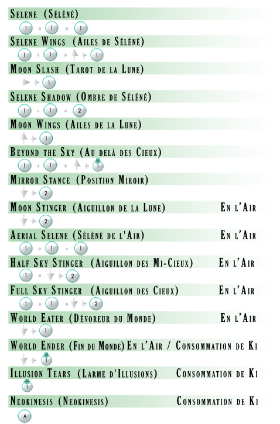
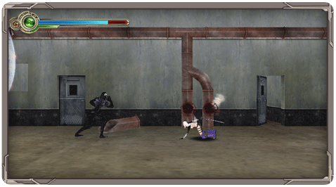

Celia a à sa disposition une multitude de mouvements spéciaux pour battre ses ennemis. Vous les trouverez dans la liste ci-dessous où en les consultant depuis le Menu du Jeu.

Projections Aériennes
Certaines attaques lancent vos ennemis dans les airs, ce qui permettra à Celia de les tuer en plein vol. Lors d’une projection dans les airs d’un ennemi, en maintenant le
bouton 1 ou en effectuant un saut rapide, notre héroïne sautera vers son ennemi afin de réaliser un combo dévastateur. Si vous disposez de la manette Classic Controller, afin de réaliser une projection aérienne, vous devez maintenir le bouton x.

Esquive
Si vous maintenez le bouton b ou appuyez sur le bouton 2 alors que Celia est abaissée, vous réaliserez une esquive rapide vers la direction que vous avez indiquée. Ce mouvement vous permettra d’éviter aussi bien les attaques que de vous placer dans le dos de vos ennemis. Si vous disposez de la manette Classic Controller, les esquives se réalisent en appuyant sur le bouton b alors que Celia est abaissée et avec le bouton L ou le bouton R afin d’indiquer la direction vers laquelle vous désirez esquiver.
Se Rétablir
Afin d’éviter de vous retrouver au sol après une attaque ennemie, il vous est possible de vous rétablir en réalisant une esquive après avoir reçu le premier coup de l’ennemi. Cette manœuvre vous permettra d’éviter les combos les plus puissantes de vos ennemis.
